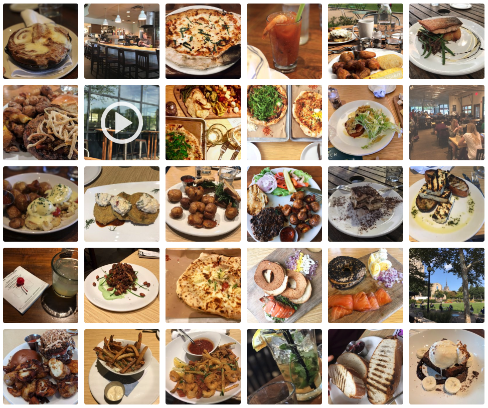

Tags of Restaurants on Yelp
Unlike what we throught before, it is actually not easy to find the restaurant that you like by categories on Yelp. Because the hierarchy of categories on Yelp are extremly messy, for example "Chinese, restaurant"/"restaurant, Chinese"/"Chinese, Food" are considered different categories. Even worse, As shown in the treemaps below, an extremly large number of categories appears only once, and even the largest categories has only a few hundred samples, which is obviously no meaningful result can be derived from. (That could also be that reason why you always cannot find your favourite food using Yelp's category search : p)
categories of samples in Yelp datasets

When people use Yelp and why: vacations and for making friends.
Photos and reviews from Yelp.
There are several interesing statistical facts that we can take into considerations:
First, the usage of yelp among new users is increasing according time since its birth of 2004 almost exponentially. From the statistics, we could almost make an assumption that because of the rich communities of locals in big cities, Yelp has evolved as a Web site, as well as a popular mobile application the way that Wikipedia has in the encyclopedia space.
Second, there are local maximum in new users sign-ups. Also, the trends of new reviews and new relationships are quite similar.
To figure out the patterns and the relations between the time periods and new reviews, we draw the following chart.
This is a figure showing the when people write reviews in Yelp.
We can see that there are several months in one year, like June, July and November, December, the number of new reviews or new relationships are always large. Mainly because these time periods are summer vacation or national day-offs.